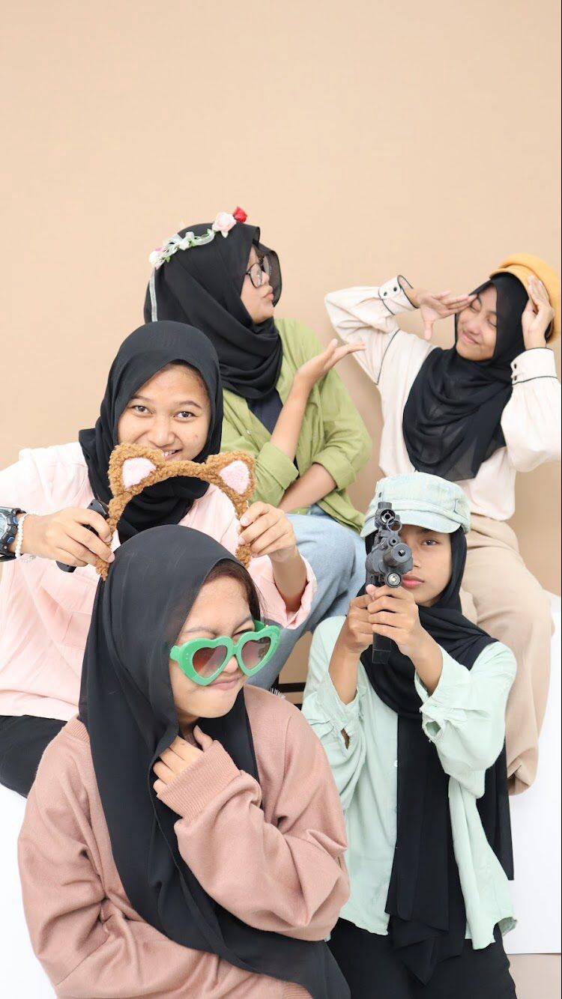
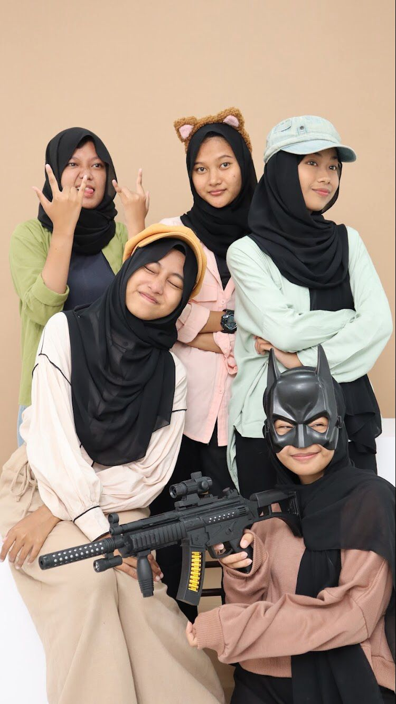
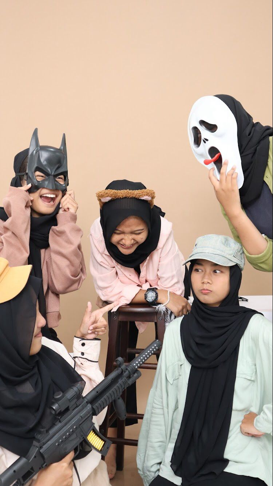
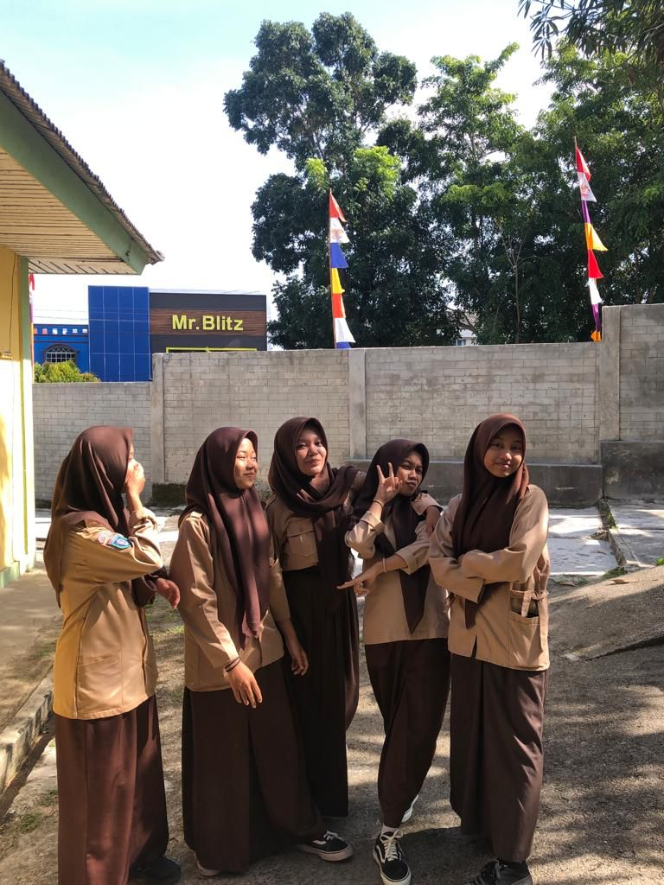
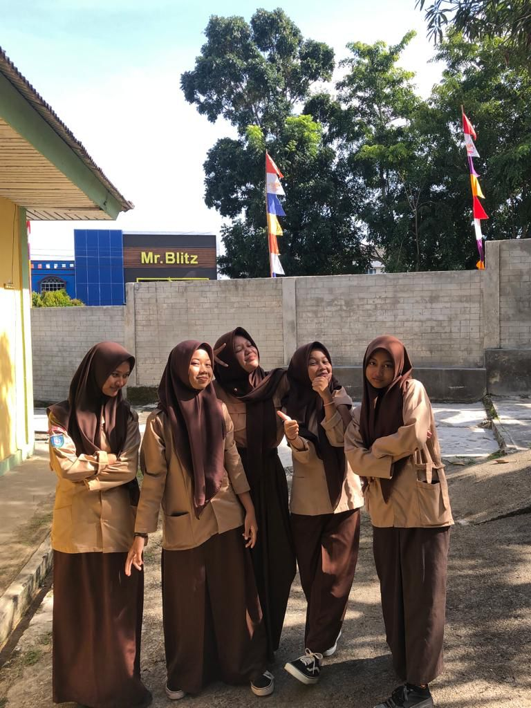
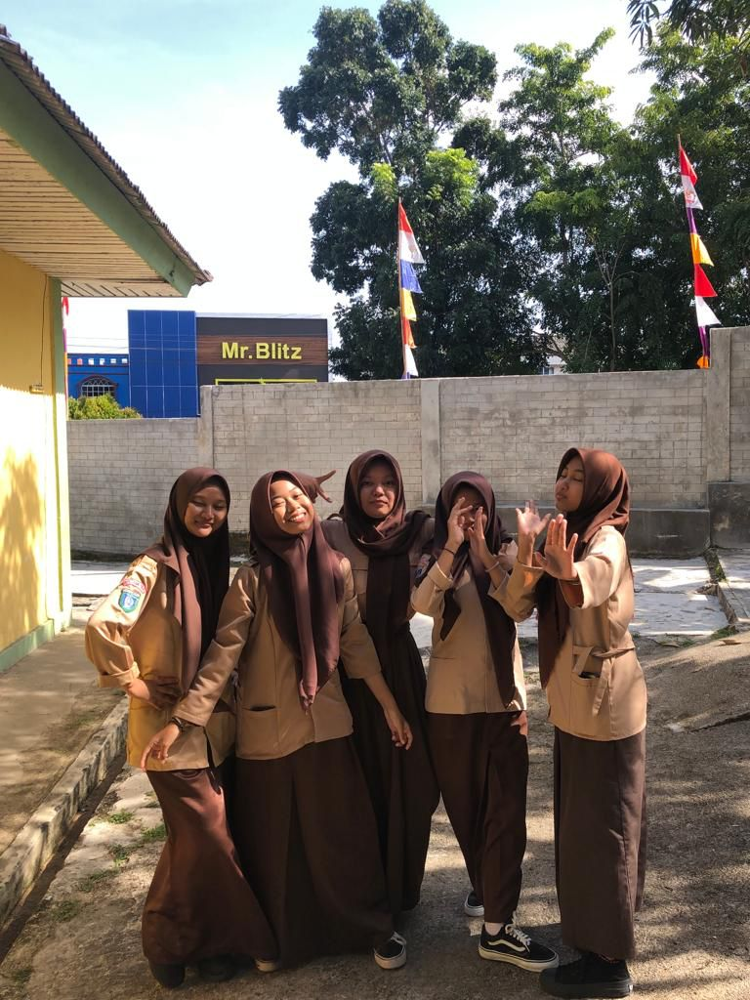

hallo teman-teman, saya adalah seorang remaja atau siswi yang pastinya masih memerlukan bimbingan
dari orang-orang disekitar,nama saya adalah saidilla rasyidi, saya bersekolah di smk negeri 1 tanjungpinang,
yang dimana ini adalah sekolah yang memang saya inginkan
untuk bisa masuk ke lingkungan sekolah ini.
salah satu olahraga yang paling saya senangi yaitu bermain bola volly dan akhirnya dulu saya pernah meraih
juara 2 tingkat sd, sehingga sampai sekarang pun saya masih terus berlatih
dan mengembangkan bakat yang saya punya ini untuk ke jenjang yang lebih serius,
yaitu dengan mengikuti kegiatan ekstrakulikuler di sekolah hingga mengikuti
club volly agar bisa lebih terlatih lagi fisiknya.
"INI TEMAN-TEMAN KU"



Hello everyone, these are my friends, i'm happy to know them,
because they are also one of the reasons why i have to be enthusiastic
and study better.
they are my friends and i feel proud of them for what they have achieved so far.



10 facts about me
- orang yang gengsian sekali
- suka banget sama hewan-hewan dan cinta banget sama alam
- susah beropini dan lebih baik dipendam
- kesabaran setipis tisu
- kalau buat salah pasti kepikiran terus
- susah untuk ngomong didepan orang-orang baru
- physical touch
- suka mendem masalah
- selalu mentingin orang lain walau balasan nya ga sesuai ekspetasi
- gampang kepikiran sama omongan orang lain yang nyakitin